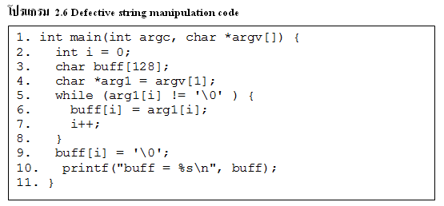

เกิดขึ้นเมื่อ ทำการตัด String เเล้ว แถวอักขระ ปลายทาง มีขนาดไม่ใหญ่ พอที่จะบรรจุ เนื้อหาของ string การตัด String Truncation อาจเกิดขึ้น ในขณะที่อ่านค่าเข้ามาของผู้ใช้ หรือ การคัดลอก string ได้และมักจะเป็นผลมาจาก โปรแกรมเมอร์ พยายามที่จะป้องกัน หน่วยความจำที่เกิดจากการล้นซึ่งจำเป็นต้องตัด string ซึ่งทำให้เกิดการสูญเสียของข้อมูลและ ในบางกรณี สามารถนำไปสู่ ช่องโหว่ของซอฟต์แวร์ได้ String Errors without Functions มีหลาย ฟังก์ชันด้วยกัน ยกตัวอย่างเช่น strcpy(), strcat(), gets(), streadd(), strecpy(), และ strtrns() มันเป็น ไปได้ที่จะ ทำการดำเนินการกับ string ที่ไม่ปลอดภัย ได้โดยไม่ต้อง เรียก ฟังก์ชันซึ่่งแสดงให้เห็นใน ตัวอย่างของ โปรแกรม C ที่มี ข้อบกพร่อง ที่เกิดจากการ ดำเนินการคัดลอก string แต่ไม่ได้มีการเรียกใช้ฟังก์ชันไลบรารี่ของ string ใด ๆ ดังแสดงในรูปต่อไปนี้้ |
||
| 
รูป2.1 Defective string manipulation code |
||